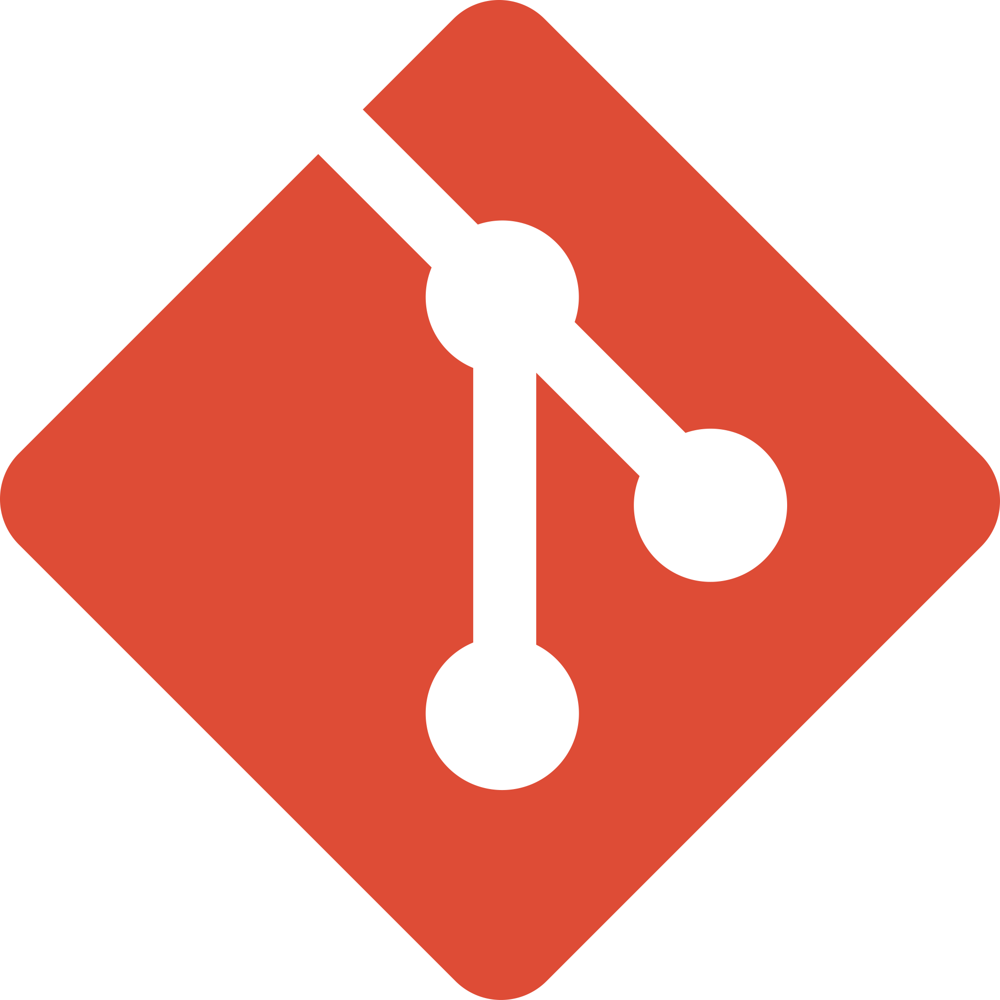

Projects

Web Scrapping
Python, pandas Css
I worked on a project where I had to web scrap the amazon top seller web page.
skills
Languages

Python

Javascript
Technologies

React

Django

Node js
Tools

Vs code

Git

Figma
timeline
Aug - 2024
Currently getting handson with SQL and visualization tools..
6Jan - 2024
Currently pursuing data analytics at durham college, studying various language like python, SQL and vizualization tools like powerBI, Tableau.
5Sept - 2023
Studied supply chain managemrnt at canadore college (nortbay campus).
4Jan - 2020
Started with JavaScript, its a complete language in itself and it took me a while to get on hold with it. Played around with JavaScript, skimmed through its frameworks, and make some small projects out of it.
32019
School over, came into college. Started learning web development. Cleared the basics like how the web works, how files are transferred, and all. Then completed an HTML, CSS course and designed some basic websites with it that lacked functionality, and as I knew python I played around with Django and learned a lot about how the backend works
22018
Started with learning python, my main goal with programming was to create things that could help the masses. Python was a great language to jump on but it didn't teach the basics of how computer work so I learned java and C with it.
1